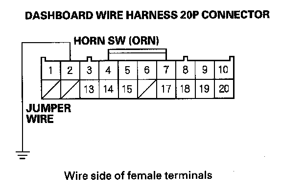
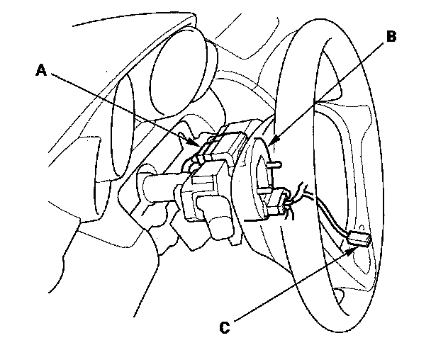
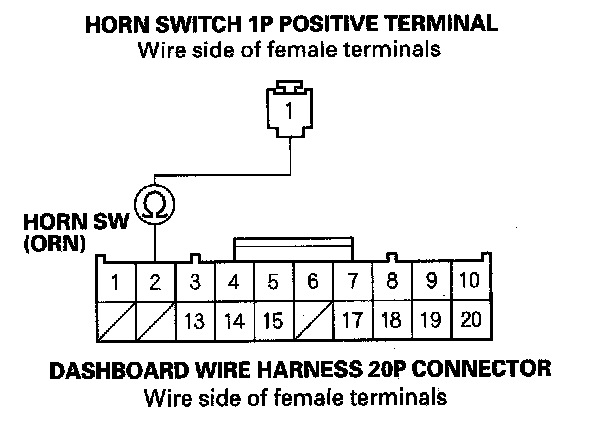

Horn Switch Test
Horn Switch Test1. Remove the steering column covers.

2. Disconnect the dashboard wire harness 20P connector (A) from the cable reel (B).

3. Using a jumper wire, connect the dashboard wire harness 20P connector No. 2 terminal to body ground. The horns should sound.
- If the horns sound, go to step 4.
- If the horns do not sound, check these items:
- No. 11 (15 A) fuse in the main under-hood fuse box.
- Horn
- MICU
- An open in the wire.

4. Reconnect the dashboard wire harness 20P connector (A) to the cable reel (B).
5. Remove the driver's airbag assembly, and disconnect the horn switch 1P positive terminal (C) from the driver's airbag.

6. Check for continuity between the dashboard wire harness 20P connector No. 2 terminal and the horn switch 1P positive terminal.
- If there is continuity, check the installation of the driver's airbag assembly and the steering wheel. If the installation is correct, faulty horn switch; replace the driver's airbag assembly.
- If there is no continuity, repair an open in the wire between the cable reel and the horn switch 1P positive terminal, if the wire harness is OK, replace the cable reel.